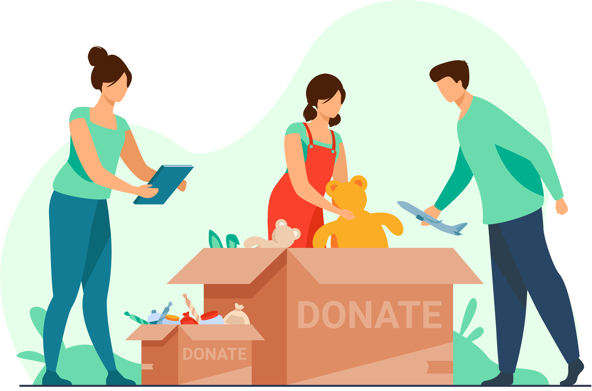
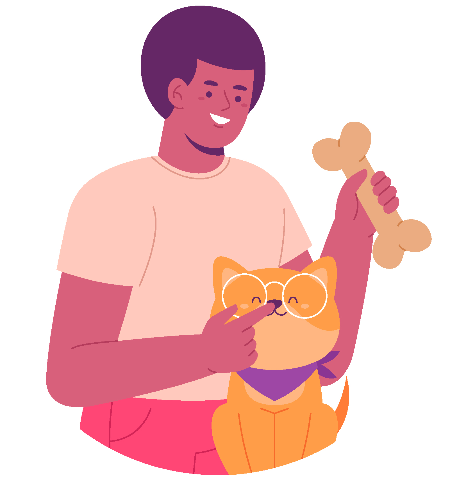
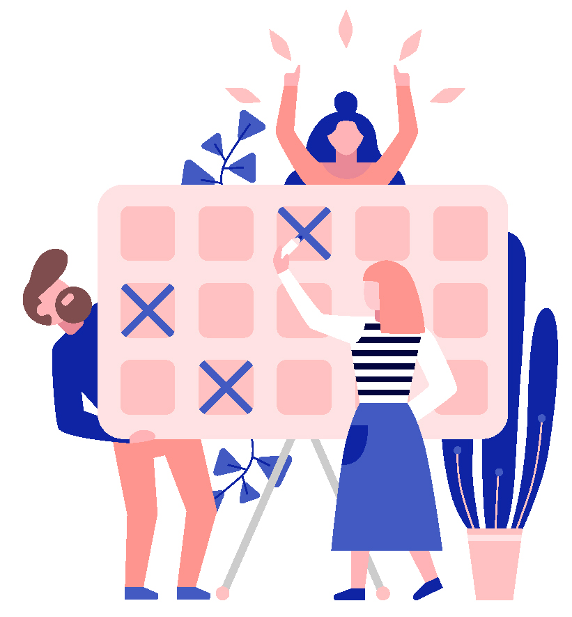
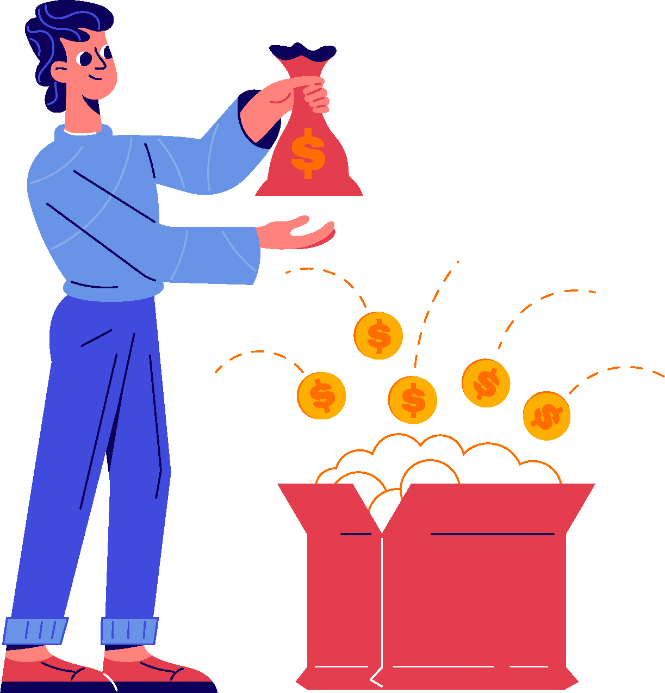
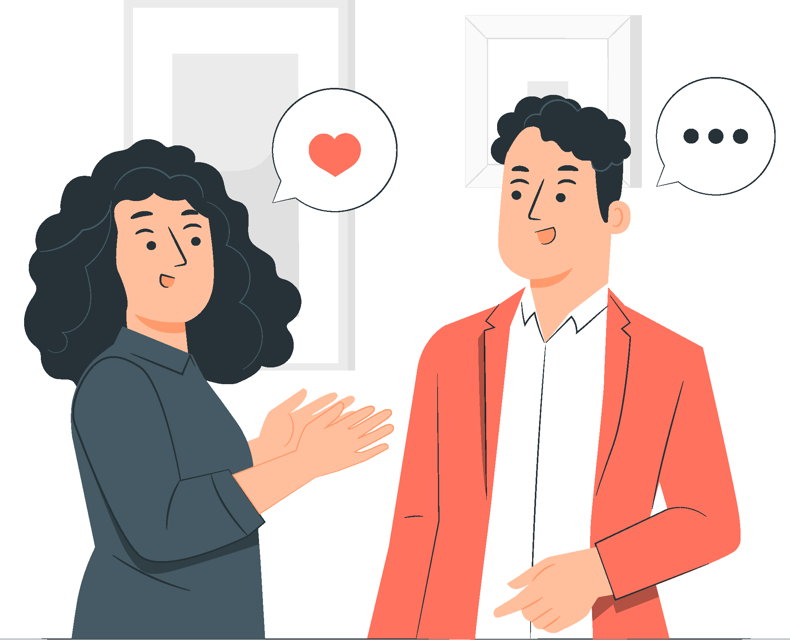
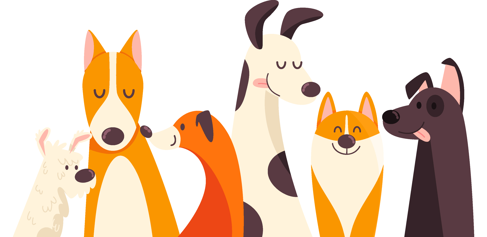

¿Quieres Ayudarnos?
¡Te contamos varias maneras de vincularte!
Donando
Puedes hacer aportes economicos desde $1,000 CO o puedes donar en especie
y nosotros recogemos las donaciones en tu casa o lugar de trabajo.
¿Qué puedes donar en especia?
Concentrado de perros y gatos adultos y cachorros.
Alimento humedo.
Vitaminas.
Medicamentos.
Todo lo que creas que pueda contribuir en su rehabilitación.

Comprando a nuestros aliados
Cuando haces una compra a nuestro nombre un porcentaje economico se destina a nuestros animales.

Brindando Hogares de paso
Si cuentas con el espacio, el tiempo y el amor para apoyar uno de nuestros rescates mientras hacemos todo su proceso de rehabilitación y encontramos una familia para siempre, serás de gran apoyo. Nosotros cubrimos todos sus gastos.

Participando en nuestras actividades
Constantemente realizamos actividades tales como rifas, ventas, eventos, entre otras; para recaudar fondos y cubrir las necesidades de nuestros animales como alimentación, consultas, tratamientos y mucho más.

Apadrinando un peludo
Tenemos un plan padrino donde puedes donar $10,000 CO mensuales que serán destinado para alimento o puedes donar una cantidad de alimento mensual, nosotros lo recogemos o también puedes llevarlo al hogar de paso donde se encuentre tu ahijado y pasar un rato con el/ella.

Voz a Voz
¡Puedes hablarle de nosotros a tus conocidos! Si compartes nuestras redes sociales, si hablas de nosotros con tu papá, tu tio, tu hermano, el amigo del amigo, nos empezaran a conocer más personas y podremos crecer.

Adoptando
Adoptar es una decisión para siempre, cambia la rutina de tu vida y modifica la estructura familiar , pero es la decisión más amorosa , empatica , compasiva y llena de magia . Puedes transformar una vida , darle la oportunidad a uno de nuestros peluditos nos permite poder ayudar a otros y que está comunidad siga creciendo.
¿Qué beneficios trae adoptar?
Crea un vinculo afectivo.
Disminuye niveles de estres.
Tendrás amor incondicional disponible 24hr.
Estableces rutinas que permiten adquirir disciplina y responsabilidad.
¡Adoptar salva vidas!
